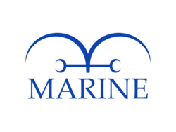
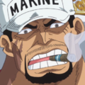
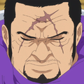
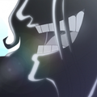

La Marine (海軍, Kaigun) est la force militaire principale du Gouvernement Mondial et un des antagonistes de longue durée de la série, à l'instar des 7 Capitaines Corsaires et des Quatre Empereurs, parmi tant d'autres. Elle est présente dans toutes les mers du monde. La Marine est présente dans ces mers sous forme de branches succursales légères. La majeure partie de ses effectifs est stationnée sur la plus dangereuse des mers, la Route de tous les Périls, où leur Quartier Général est situé.
L'Équipage aux Cent Bêtes |
|---|
|  |
| Nom Japonais : 海軍 |
| Nom Romanisé : Kaigun |
| Nom Français : Marine |
| Dirigeant : Sakazuki |
| Quartier Généra : G-1 |
| Occupation : Protection du monde connu et des habitants contre les pirates ou bandits. |
Amiral Commandant en Chef |
|---|
| sakazuki |
Amiraux |
|---|
| fujitora |
| kizaru |
| ryokugyu |